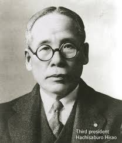
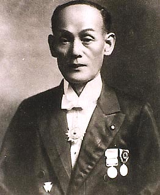

1837 - 1912
Fondateur de Kawasaki Heavy Industries. Parti de la construction navale, son empire a fini par dominer le monde du deux-roues avec des modèles iconiques axés sur la performance pure.

1851 - 1916
Un horloger de génie qui a commencé par réparer des orgues. Cette précision musicale se retrouve aujourd'hui dans chaque moteur Yamaha, symbolisé par les trois diapasons du logo.